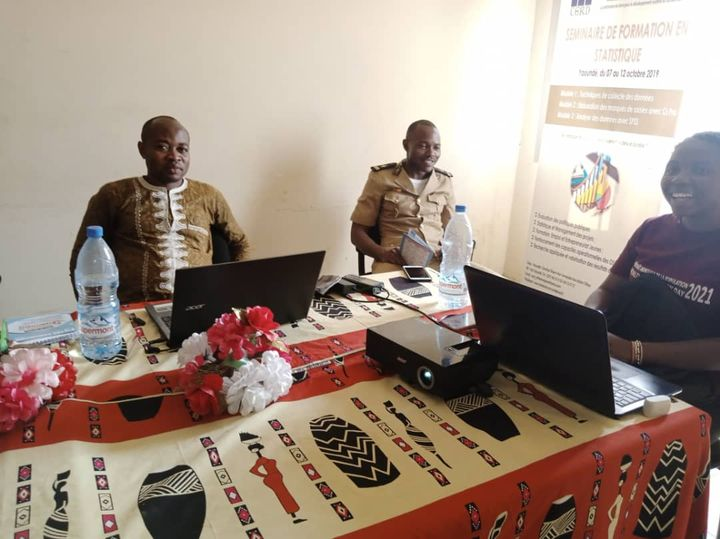
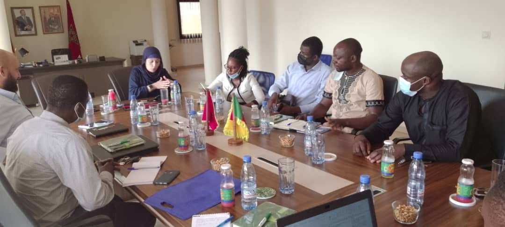
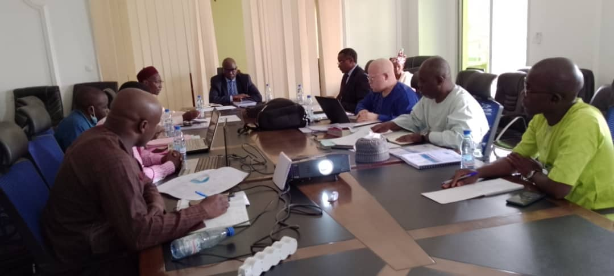

ILS NOUS FONT CONFIANCE
Bénéficiez d'une formation de qualité et personnalisée sur les logiciels statistique au Cabinet TDR Consulting Sarl (en ligne et en présentiel) 𝐒𝐏𝐒𝐒, 𝐬𝐩𝐡𝐢𝐧𝐱 , 𝐒𝐓𝐀𝐓𝐀, 𝐊𝐎𝐁𝐎 𝐂𝐎𝐋𝐋𝐄𝐂𝐓, 𝐒𝐔𝐑𝐕𝐄𝐘-𝐂𝐓𝐎, 𝐎𝐃𝐊 𝐂𝐨𝐥𝐥𝐞𝐜𝐭, 𝐌𝐬 𝐏𝐫𝐨𝐣𝐞𝐜𝐭, 𝐌𝐚𝐭𝐫𝐢𝐢𝐱 𝐄𝐑𝐏, 𝐆𝐚𝐧𝐭𝐭𝐏𝐫𝐨𝐣𝐞𝐜𝐭 𝐄𝐯𝐢𝐞𝐰𝐬, 𝐌𝐢𝐜𝐫𝐨𝐬𝐨𝐟𝐭 𝐄𝐱𝐜𝐞𝐥, 𝐏𝐨𝐰𝐞𝐫𝐏𝐨𝐢𝐧𝐭, 𝐰𝐨𝐫𝐝 𝐞𝐭 𝐀𝐜𝐜𝐞𝐬𝐬, ...
𝐂ORPERATION 𝐂AMEROUN-𝐌AROC
Partenariat stratégique entre le 𝐂𝐚𝐛𝐢𝐧𝐞𝐭 𝐓𝐃𝐑 𝐂𝐨𝐧𝐬𝐮𝐥𝐭𝐢𝐧𝐠 𝐒𝐚𝐫𝐥 et l’entreprise marocaine 𝐃𝐢𝐬𝐩𝐫𝐞𝐬𝐬𝐨 en vue de la réalisation des projets à forts impacts socio-économiques en Afrique. La réunion d’examen des stipulations contractuelles s’est tenue le 25 janvier 2022 à Yaoundé.
l’ETUDE CONDUITE PAR LE CABINET TDR CONSULTING SARL
Atelier de restitution des résultats de l’etude strategique pour la mise en place du systeme pamenant et intergre des statistique agropastorales pour le compte du recensement general de l’agriculture et de l’elevage